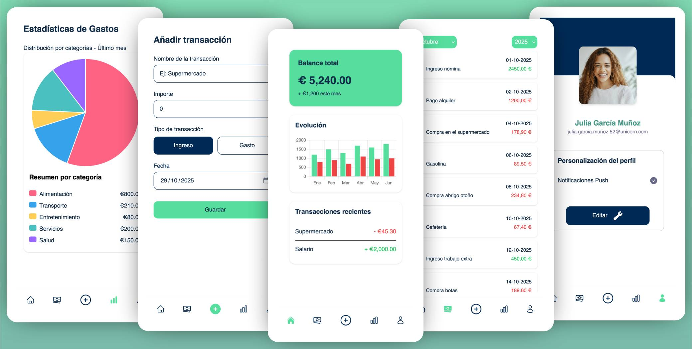

Soy un apasionado de la tecnología 👨🏻💻, salir a correr 🏃🏻♂️, y montar
en bicicleta 🚴♂️. En mi tiempo libre, me encanta aprender cosas
nuevas y trabajar en proyectos personales que supongan un reto para
mejorar mis habilidades en el ámbito de la programación usando
lenguajes como Java, Python, y Typescript.
Me he especializado en aplicaciones empresariales usando Spring
Boot, con intercambio de mensajes mediante colas de mensajes
(Kafka), servicios REST y SOAP. Me gusta enfocarme 🎯 en el
rendimiento de los sistemas, las buenas prácticas en el código, y
las pruebas del mismo.
Experiencia profesional
Ingeniero de Software · BNP Paribas Personal Finance (Tecdata
Engineering), Madrid
▸ Apoyo técnico del equipo: soporte transversal, adquisición
de requisitos con negocio y resolución de incidencias en
producción.
▸ Comunicación con equipos técnicos internacionales para
coordinar, integrar y alinear soluciones.
▸ Optimización del pipeline de build en software legacy:
reducción del tiempo de construcción y despliegue.
▸ Desarrollo de scripts en Python para
automatizar la generación de despliegues, eliminando pasos
manuales y reduciendo errores operativos.
▸ Diseño y desarrollo de microservicios en
Java 8 y 17 con
Spring Boot para sistemas financieros
críticos de alta disponibilidad.
▸ Integración de mensajería asíncrona con
Kafka y despliegue en entornos Cloud (IBM Cloud, Kubernetes).
▸ Contribución en decisiones de arquitectura frontend
(Angular) y backend en nuevos proyectos,
aportando visión fullstack desde el inicio.
▸ Pipelines de CI/CD en GitLab y Jenkins con
control de calidad automatizado mediante
SonarQube.
Ingeniero de Software · Fujitsu Technology Solutions (Experis),
Madrid
Java 8SpringSOAP/RESTOracleHibernateIBM WebSphere
▸ Evolución y mantenimiento de aplicaciones web empresariales
en Java 6 con JSP.
▸ Desarrollo e integración de servicios
SOAP (Apache CXF) y
REST (Spring) con sistemas externos.
▸ Gestión de bases de datos Oracle con
Hibernate y despliegue en
IBM WebSphere.
▸ Desarrollo frontend en
HTML, CSS y JavaScript aplicando principios
de accesibilidad.
▸ Desarrollo de aplicaciones web siguiendo la metodología
Twelve-Factor App para arquitecturas
cloud-native.
Formación académica
🎓 Grado en Ingeniería del Software — Universidad Rey Juan Carlos
· 2014 – 2020
Formación complementaria
API REST con Spring Boot Avanzado
· Tecnofor (Microservicios, Spring Cloud, Feign, Eureka, Hystrix,
Zuul, MongoDB) · 2024
Angular y Angular Avanzado ·
DevTaller – Fernando Herrera – Udemy · 2024
Reactive Architecture: Domain Driven Design
· Cognitive Class · 2023
Introduction to Containers, Kubernetes & OpenShift V2
· Cognitive Class · 2023
Scrum Foundations Professional Certificate
· CertiProf · 2021
Docker – Guía práctica para desarrolladores
· DevTaller – Fernando Herrera – Udemy · 2020
Agilidad y Lean: Gestionando proyectos del s. XXI
· Javier Garzás – MiriadaX · 2016
Proyectos personales

Personal Finances
Una PWA mobile-first para gestionar gastos e ingresos en
un solo lugar, con una UX simplificada y enfocada en el
rendimiento. Pero más allá de la utilidad, este proyecto
ha sido mi laboratorio para profundizar en conocimientos
de arquitectura, integración de servicios y DevOps.
Aplicación web orientada a dispositivos móviles con la que
puedes encontrar la música adecuada para tu ritmo de
carrera. Desarrollada completamente en typescript con
conexión a API externa para la obtención de las canciones
según la conversión bidireccional de BPM y ritmo de reloj
en carrera